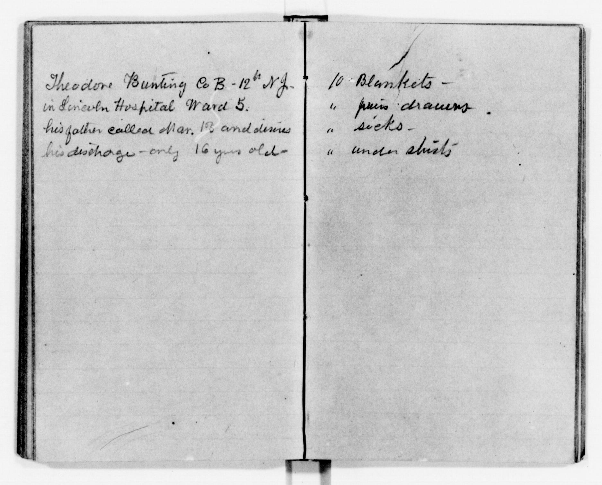

Sample 01 · Clearer short notes
View original at LOC ↗A hospital note and a supply list
The note names Theodore Bunting in Lincoln Hospital, Ward 5, and records his father asking for his discharge at age 16. The facing page lists blankets and clothing. The day after Mar. remains uncertain.


Checked against the reference by AI.
Theodore Bunting Co B - 12th NJ. in Lincoln Hospital Ward 5. his father called Mar. [uncertain: 13] and desires his discharge - only 16 years old. 10 Blankets - " pairs drawers. " socks. " under shirts
Review notes and measured differences
CER 12.17%; WER 27.03%. These measure disagreement with the published reference.
- Theodore Bunting and Lincoln Hospital were correctly recovered in the first pass.
- The AI suggested 18 for the day; the reference says 1st; the checked copy tentatively reads 13 and retains an uncertainty marker.
- The page says Mar. within a volume cataloged Jan.–Feb. 1863. This date mismatch remains unresolved.
- The checked copy otherwise follows the reference, including ditto marks and punctuation.
LOC reference view · LOC reference download · Full line diff
First-pass model notes
The spread is transcribed left page first, with a blank line before the right-page list. The day after “Mar.” is faint; the tentative reading is 18. The “th” after 12 is raised in the handwriting. The three ditto marks on the right page are preserved as quotation marks.